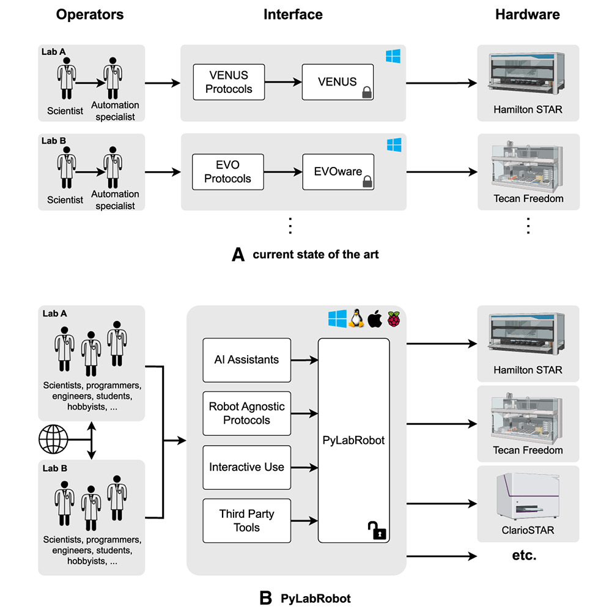

Welcome to PyLabRobot’s documentation!#
PyLabRobot is a hardware agnostic, pure Python SDK for liquid handling robots and accessories.
GitHub repository: PyLabRobot/pylabrobot
Community: https://discuss.pylabrobot.org
Paper: https://www.cell.com/device/fulltext/S2666-9986(23)00170-9

Note
PyLabRobot is different from PyHamilton. While both packages are created by the same lab and both provide a Python interfaces to Hamilton robots, PyLabRobot aims to provide a universal interface to many different robots runnable on many different computers, where PyHamilton is a Windows only interface to Hamilton’s VENUS.
Used by#


Documentation#
User Guide
Development
Resource Library
API documentation
Citing#
If you use PyLabRobot in your research, please cite the following paper:
@article{WIERENGA2023100111,
title = {PyLabRobot: An open-source, hardware-agnostic interface for liquid-handling robots and accessories},
journal = {Device},
volume = {1},
number = {4},
pages = {100111},
year = {2023},
issn = {2666-9986},
doi = {https://doi.org/10.1016/j.device.2023.100111},
url = {https://www.sciencedirect.com/science/article/pii/S2666998623001709},
author = {Rick P. Wierenga and Stefan M. Golas and Wilson Ho and Connor W. Coley and Kevin M. Esvelt},
keywords = {laboratory automation, open source, standardization, liquid-handling robots},
}
Wierenga, R., Golas, S., Ho, W., Coley, C., & Esvelt, K. (2023). PyLabRobot: An Open-Source, Hardware Agnostic Interface for Liquid-Handling Robots and Accessories. Device. https://doi.org/10.1016/j.device.2023.100111
Tom, Gary, et al. “Self-driving laboratories for chemistry and materials science.” Chemical Reviews (2024).
Anhel, Ana-Mariya, Lorea Alejaldre, and Ángel Goñi-Moreno. “The Laboratory Automation Protocol (LAP) Format and Repository: a platform for enhancing workflow efficiency in synthetic biology.” ACS synthetic biology 12.12 (2023): 3514-3520.
Bultelle, Matthieu, Alexis Casas, and Richard Kitney. “Engineering biology and automation–Replicability as a design principle.” Engineering Biology (2024).
Pleiss, Jürgen. “FAIR Data and Software: Improving Efficiency and Quality of Biocatalytic Science.” ACS Catalysis 14.4 (2024): 2709-2718.
Gopal, Anjali, et al. “Will releasing the weights of large language models grant widespread access to pandemic agents?.” arXiv preprint arXiv:2310.18233 (2023).
Padhy, Shakti P., and Sergei V. Kalinin. “Domain hyper-languages bring robots together and enable the machine learning community.” Device 1.4 (2023).
Beaucage, Peter A., Duncan R. Sutherland, and Tyler B. Martin. “Automation and Machine Learning for Accelerated Polymer Characterization and Development: Past, Potential, and a Path Forward.” Macromolecules (2024).
Bultelle, Matthieu, Alexis Casas, and Richard Kitney. “Construction of a Calibration Curve for Lycopene on a Liquid-Handling Platform─ Wider Lessons for the Development of Automated Dilution Protocols.” ACS Synthetic Biology (2024).
Hysmith, Holland, et al. “The future of self-driving laboratories: from human in the loop interactive AI to gamification.” Digital Discovery 3.4 (2024): 621-636.
Casas, Alexis, Matthieu Bultelle, and Richard Kitney. “An engineering biology approach to automated workflow and biodesign.” (2024).
Jiang, Shuo, et al. “ProtoCode: Leveraging Large Language Models for Automated Generation of Machine-Readable Protocols from Scientific Publications.” arXiv preprint arXiv:2312.06241 (2023).
Jiang, Shuo, et al. “ProtoCode: Leveraging large language models (LLMs) for automated generation of machine-readable PCR protocols from scientific publications.” SLAS technology 29.3 (2024): 100134.
Thieme, Anton, et al. “Deep integration of low-cost liquid handling robots in an industrial pharmaceutical development environment.” SLAS technology (2024): 100180.
Daniel, Čech. Adaptace algoritmů pro navigaci robota na základě apriorních informací. BS thesis. České vysoké učení technické v Praze. Vypočetní a informační centrum., 2024.